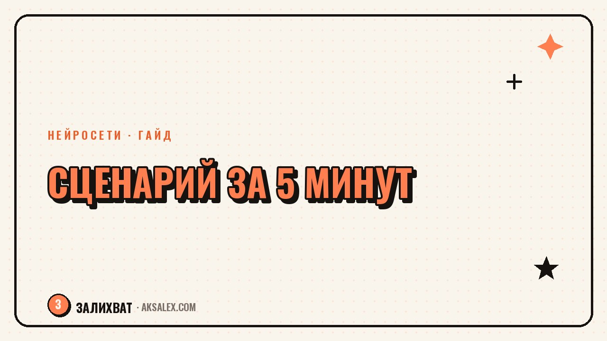

Как сделать сценарий Reels за 5 минут

Сценарий Reels не обязан быть текстом на страницу. Хороший короткий ролик держится на простом каркасе: цепляющий хук, одна ясная мысль и внятный финал. Если знать этот каркас, сценарий собирается за пять минут, а с нейросетью - ещё быстрее. Разберём структуру рабочего сценария, готовый шаблон и промпт, который выдаёт черновик под твою тему.
Почему длинный сценарий не нужен
Reels длится 15-40 секунд. За это время невозможно раскрыть тему глубоко, да и не нужно. Задача короткого ролика - зацепить, донести одну мысль и оставить желание досмотреть или подписаться. Всё, что сверх этого, только размывает.
Поэтому сценарий - это не сочинение, а скелет: что говоришь в первую секунду, какую одну мысль несёшь и чем заканчиваешь. Когда скелет ясен, слова находятся сами, и ролик снимается без десяти дублей и мучений.
Короткий ролик - это одна мысль, поданная так, чтобы её нельзя было пролистнуть. Всё лишнее убивает динамику.
Структура сценария из трёх частей
Любой рабочий Reels раскладывается на три блока. Держи их в голове, и сценарий соберётся за минуты.
1. Хук - первые 1-3 секунды
Сильная фраза или кадр без приветствия, сразу в суть. Хук обещает выгоду или задевает боль: «три ошибки, из-за которых рилз не залетает».
2. Суть - основная часть
Одна мысль, разобранная на два-три пункта или шага. Не пытайся уместить всё - раскрывай ровно одно.
3. Финал - последние секунды
Короткий вывод и мягкий призыв: сохранить, повторить, написать в комментариях. Финал закрывает ролик и даёт зрителю следующий шаг.
Готовый шаблон сценария
Возьми эту рамку и заполни своей темой. По ней сценарий пишется за пять минут даже без опыта.
| Блок | Что говоришь | Время |
|---|---|---|
| Хук | Обещание или боль одной фразой | 1-3 сек |
| Переход | Коротко ввести в тему | 2-3 сек |
| Пункт 1 | Первый шаг или ошибка | 5-8 сек |
| Пункт 2 | Второй шаг или ошибка | 5-8 сек |
| Финал | Вывод плюс призыв к действию | 3-5 сек |
Заметь: весь сценарий - это пять коротких строк, а не полотно текста. Пиши их тезисами, чтобы в кадре говорить живо, а не читать с листа деревянным голосом.
Как ускорить сценарий нейросетью
Если тема есть, а слова не идут, отдай черновик нейросети. Дай ей тему, аудиторию и попроси сценарий по структуре хук-суть-финал на 30 секунд. За минуту получишь каркас, который останется поправить под свой голос.
Ты - сценарист коротких Reels. Тема: [тема]. Аудитория: [кто, боль]. Напиши сценарий на 30 секунд по структуре: цепляющий хук в первой секунде, суть на 2-3 пункта, финал с призывом. Коротко, разговорно, тезисами, без приветствий и штампов.
Нейросеть даёт скорость, но живость - твоя работа. Перепиши сухие фразы под то, как ты реально говоришь, добавь свою интонацию. Сценарий должен звучать как ты, а не как ровный текст из интернета.
Частые ошибки в сценариях Reels
Первая - долгое вступление. Приветствие и раскачка съедают самые ценные секунды, и зритель уходит до сути. Начинай сразу с хука. Вторая - несколько мыслей в одном ролике: они дробят внимание и ничего не запоминается.
- Долгое вступление - зритель уходит до того, как начнётся суть.
- Несколько тем в одном ролике - ни одна не доходит.
- Нет финала - ролик обрывается, и зритель не делает следующий шаг.
- Читаешь сценарий с листа - речь звучит деревянно и неживо.
Собери себе пару шаблонов сценария под разные форматы - и написание перестанет быть проблемой. Останется вставлять тему и снимать, а не выдумывать структуру каждый раз с нуля.
Частые вопросы
Какой длины должен быть сценарий Reels?
Пять-шесть коротких строк тезисами: хук, переход, два-три пункта и финал. Полотно текста не нужно - в кадре важно говорить живо, а не читать с листа.
Можно ли написать сценарий нейросетью?
Да, нейросеть быстро выдаёт каркас по структуре хук-суть-финал. Но перепиши его под свой голос: добавь интонацию и живые фразы, чтобы ролик не звучал шаблонно.
С чего начинать сценарий?
С хука - сильной фразы или кадра в первую секунду без приветствия. Именно он решает, досмотрят ли ролик, поэтому над ним стоит подумать в первую очередь.
Сколько мыслей вмещать в один ролик?
Одну. Короткий Reels не раскрывает тему глубоко, его задача - донести одну ясную мысль. Несколько идей дробят внимание, и не запоминается ни одна.
Нужно ли учить сценарий наизусть?
Нет, достаточно тезисов. Держи опорные точки перед глазами и говори своими словами - так речь звучит живо, а не как заученный или считанный с листа текст.
Раз тема оказалась полезной, вот что почитать следующим. Разбираем, где голосовая нейросеть экономит время блогеру, а где живой голос важнее.
Читать статью →а не вручную